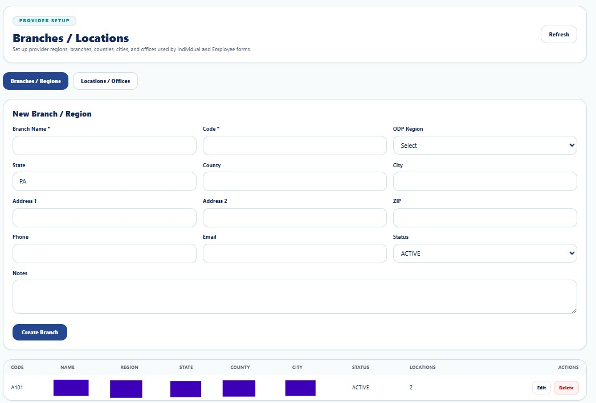
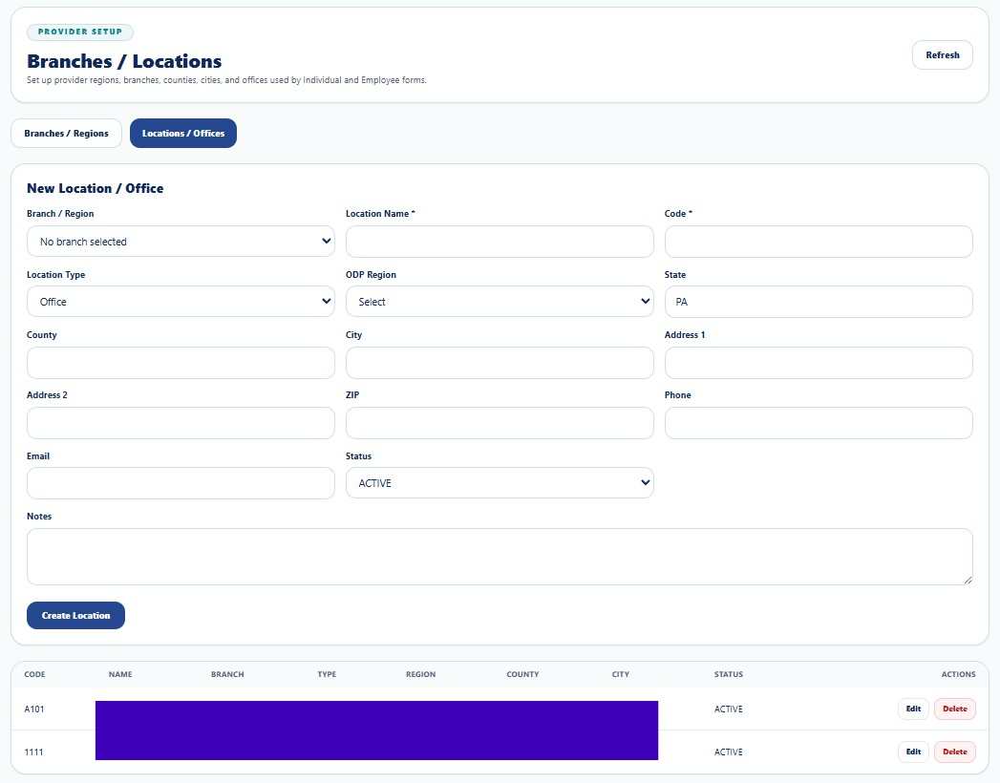

Provider Structure
Branches / Locations
Configure regions, branches, offices, geographic information, contacts, and status.
Privacy, security, and administrative access notice
Administrative pages may display workforce identity, contact information, Provider identifiers, organizational structure, account status, and operational configuration. Screenshots in this guide use redacted or demonstration information. Access should be limited by role, Provider scope, and the minimum access necessary to complete authorized administrative duties.
Purpose
Branches / Locations defines the Provider's geographic and operational hierarchy. A branch may represent a region, county group, service territory, or management division. A location represents a physical or operational office used by Individual, Employee, scheduling, reporting, and administrative workflows.


Branch / Region Fields
| Function | Purpose | Administrative control |
|---|---|---|
| Branch Name | Human-readable branch or region name. | Use a name recognized by leadership. |
| Code | Unique stable branch identifier. | Keep consistent after records exist. |
| ODP Region | Maps the branch to the applicable service region. | Select the correct operating region. |
| State / County / City / Address / ZIP | Defines geographic identity. | Verify all postal information. |
| Phone / Email | Stores branch contact channels. | Use monitored business contacts. |
| Status | Controls active availability. | Deactivate closed branches. |
| Notes | Stores non-sensitive operational context. | Avoid PHI and credentials. |
Location / Office Fields
| Function | Purpose | Administrative control |
|---|---|---|
| Branch / Region | Selects the parent hierarchy. | Confirm before creation. |
| Location Name / Code | Identifies the office or site. | Use unique and stable values. |
| Location Type | Classifies the site. | Choose the actual operational type. |
| ODP Region / State | Supports regional and state operations. | Keep aligned with the parent branch. |
| County / City / Address / ZIP | Stores site geography. | Validate before use. |
| Phone / Email | Stores local contact information. | Use business channels. |
| Status | Controls availability. | Deactivate closed offices. |
| Notes | Stores operational details. | Do not store unnecessary PHI. |